vignettes/hoodscanR_scider_workshop.Rmd
hoodscanR_scider_workshop.Rmd
R version: R Under development (unstable)
(2025-11-22 r89050)
Bioconductor version:
3.23
This 90‑minute, hands‑on workshop introduces two complementary Bioconductor packages for spatial transcriptomics (ST):
We’ll start with local structure (hoodscanR), then zoom out to density (scider).
Data
Use either: (a) a published Xenium example in the vignettes below, or (b) your own ST dataset (counts + coordinates).
Below is an edited version of the hoodscanR quick start, adapted for a live workshop.
knitr::opts_chunk$set(echo = TRUE, message = FALSE, warning = FALSE, dpi = 96)hoodscanR is an R package for analysing cellular
neighborhoods in single‑cell‑resolution ST data.
It is built on the SpatialExperiment
infrastructure and produces per‑cell neighborhood annotations,
co‑localisation statistics, and neighborhood‑based clustering.
if (!require("BiocManager", quietly = TRUE)) install.packages("BiocManager")
BiocManager::install("hoodscanR")
# Development version
# devtools::install_github("DavisLaboratory/hoodscanR")
suppressPackageStartupMessages({
library(SummarizedExperiment)
library(SingleCellExperiment)
library(SpatialExperiment)
})
library(hoodscanR)
ws_colors <- c(
"#FFBE7D", "#8E3B5D", "#1B263B", "#778DA9", "#BB3E03",
"#D37295", "#0A9396", "#8CD17D", "#FFD700", "#90EE90",
"#9B2226", "#E15759", "#9467BD", "#F28E2B", "#2EFEF7",
"#EE9B00", "#CA6702", "#94D2BD", "#E9D8A6", "#005F73",
"#32CD32", "#C5B0D5", "#3B3B3B", "#000080", "#2F4F4F",
"#FF00FF", "#7BA05B", "#AFEEEE", "#FF9D9A", "#BAB0AC",
"#59A14F"
)In this workshop we use a breast‑cancer tissue section from Janesick et al. (2023, Nature Communications), which introduced the Xenium in‑situ platform. This FFPE human breast tumour (ER+/HER2+, Stage II‑B) was profiled with a targeted 313‑gene panel using rolling‑circle amplification and cyclic fluorescent probe imaging, providing sub‑cellular transcript localisation. This dataset is ideal for combining neighborhood‑level and density‑level spatial analyses.
spe <- readRDS("../inst/extdata/spe_S1_Rep1.RDS")Let’s confirm the structure of the SpatialExperiment
object and its key elements.
spe # dimensions, assays, and metadata## class: SpatialExperiment
## dim: 313 162998
## metadata(0):
## assays(1): counts
## rownames(313): ABCC11 ACTA2 ... ZEB2 ZNF562
## rowData names(0):
## colnames(162998): 1 2 ... 167779 167780
## colData names(14): orig.ident nCount_RNA ... cell_type sample_id
## reducedDimNames(0):
## mainExpName: NULL
## altExpNames(0):
## spatialCoords names(2) : x_centroid y_centroid
## imgData names(0):
assayNames(spe)## [1] "counts"## DataFrame with 6 rows and 14 columns
## orig.ident nCount_RNA nFeature_RNA transcript_counts control_probe_counts
## <factor> <numeric> <integer> <integer> <integer>
## 1 S1_Rep1 28 15 28 1
## 2 S1_Rep1 94 38 94 0
## 5 S1_Rep1 48 33 48 0
## 8 S1_Rep1 39 25 39 0
## 9 S1_Rep1 19 15 19 0
## 10 S1_Rep1 79 45 79 0
## control_codeword_counts total_counts cell_area nucleus_area RNA_snn_res.0.3
## <integer> <integer> <numeric> <numeric> <factor>
## 1 0 29 58.3870 26.6422 4
## 2 0 94 197.0167 42.1308 4
## 5 0 48 107.6525 37.4797 3
## 8 0 39 85.0292 26.3712 4
## 9 0 19 58.7934 11.0633 3
## 10 0 79 106.1172 38.6086 3
## seurat_clusters ident cell_type sample_id
## <factor> <factor> <character> <character>
## 1 4 4 Cancer S1_Rep1
## 2 4 4 Cancer S1_Rep1
## 5 3 3 Cancer S1_Rep1
## 8 4 4 Cancer S1_Rep1
## 9 3 3 Mast S1_Rep1
## 10 3 3 Mast S1_Rep1##
## B Basal Cancer Endothelial Fibroblast LP
## 3549 7676 64264 8048 43628 3322
## Macrophage Mast Pericyte T_NK
## 13111 508 2768 16124
head(spatialCoords(spe))## x_centroid y_centroid
## 1 847.2599 326.1914
## 2 826.3420 328.0318
## 5 841.3575 332.2425
## 8 828.7262 341.7123
## 9 847.6031 344.5115
## 10 838.7647 345.3068The readHoodData function can format the
spatialExperiment input object as desired for all other functions in the
hoodscanR package.
spe <- readHoodData(spe, anno_col = "cell_type")We can have a look at the tissue and cell positions by using the
function plotTissue.
The plotTissue function is very flexible, it takes all
parameters that can go into geom_point() or
aes(). And the output is a ggplot object, therefore is
easily customised.
plotTissue(spe, color = cell_annotation, size = 0.1, alpha = 0.9) +
scale_color_manual(values = ws_colors) +
guides(color = guide_legend(override.aes = list(shape = 15, size = 5)))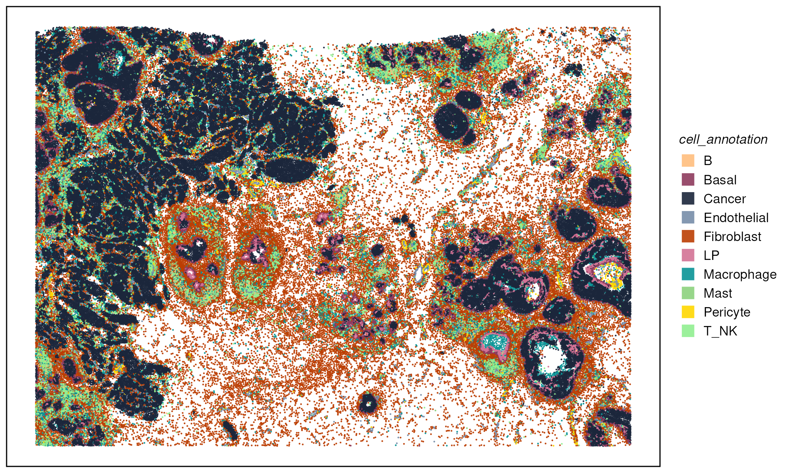
Identify the k nearest cells for each cell (reduced to
k = 50 for speed during the workshop):
fnc <- findNearCells(spe, k = 50)
lapply(fnc, function(x) x[1:10, 1:5]) # peek at annotation/distance matrices## $cells
## nearest_cell_1 nearest_cell_2 nearest_cell_3 nearest_cell_4 nearest_cell_5
## 1 Cancer Cancer Cancer Cancer Cancer
## 2 Cancer Cancer Cancer Cancer Cancer
## 5 Cancer Cancer Mast Mast Cancer
## 8 Cancer Mast Cancer Cancer Cancer
## 9 Cancer Mast Fibroblast Endothelial Cancer
## 10 Fibroblast Mast Cancer Cancer Fibroblast
## 11 Mast Fibroblast Cancer Mast Cancer
## 12 Cancer Fibroblast Cancer Cancer Mast
## 13 Fibroblast Fibroblast Cancer Endothelial Pericyte
## 14 Cancer Cancer Cancer Cancer Pericyte
##
## $distance
## nearest_cell_1 nearest_cell_2 nearest_cell_3 nearest_cell_4 nearest_cell_5
## 1 8.172200 8.453065 10.840976 14.55872 15.05543
## 2 12.315512 13.300914 13.818413 13.88673 15.36542
## 5 8.453065 12.999877 13.319093 13.76716 15.59475
## 8 9.978655 10.662621 10.845707 13.00335 13.88673
## 9 6.667777 8.874072 10.351267 11.39742 12.57170
## 10 5.942635 8.874072 10.662621 13.31909 13.44706
## 11 5.942635 8.118070 8.257451 10.35127 14.04276
## 12 6.015252 8.118070 9.556540 12.91560 13.44706
## 13 8.257451 9.556540 9.697260 10.52960 11.87510
## 14 7.912776 9.098504 9.697260 10.61688 12.16953Compute per‑cell neighborhood probabilities. The
scanHoods function contains the core algorithm of
hoodscanR, which is controlled by the hyperparameter tau.
By default, tau is set to median(m**2)/5 as m
is the distance matrix (this was tested in multiple datasets). Smaller
tau value assign greater weights to nearby cells, while
larger value consider more distant cells as contributors to the
neighborhood. In extreme case, if one want to have equal weights of all
k cells, set parameter mode to smoothFadeout,
it will search for the desired tau automatically.
pm <- scanHoods(fnc$distance)
pm[1:10, 1:5]## nearest_cell_1 nearest_cell_2 nearest_cell_3 nearest_cell_4 nearest_cell_5
## 1 0.14532679 0.14264173 0.11866835 0.08138581 0.07674232
## 2 0.10755686 0.09724237 0.09194190 0.09124955 0.07677249
## 5 0.13967276 0.09460766 0.09148590 0.08715731 0.07034428
## 8 0.10902265 0.10304561 0.10143768 0.08259369 0.07511834
## 9 0.11092298 0.09672671 0.08635509 0.07885410 0.07047008
## 10 0.12661434 0.10645036 0.09258495 0.07178642 0.07081111
## 11 0.11446808 0.10130476 0.10038552 0.08591918 0.05996522
## 12 0.11527935 0.10237717 0.09249219 0.06841911 0.06469580
## 13 0.08913257 0.08126380 0.08038921 0.07516171 0.06663616
## 14 0.09164611 0.08455286 0.08083665 0.07502498 0.06513906And the the probablities add up to 1.
## 56123 31793 154816 79154 22201 148644 139989 134153 80537 50037 114531
## 1 1 1 1 1 1 1 1 1 1 1
## 150606 96404 63618 150038 112354 119591 135150 26717 21864 116163 159040
## 1 1 1 1 1 1 1 1 1 1 1
## 18817 157828 13350 36789 68861 104875 93298 107549 87075 81669 4014
## 1 1 1 1 1 1 1 1 1 1 1
## 56897 16668 31989 123240 150139 113037 112362 56203 59662 34015 120201
## 1 1 1 1 1 1 1 1 1 1 1
## 42802 105333 61666 152112 148579 112551
## 1 1 1 1 1 1The probability matrix can then be aggregated by annotation (cell type in this case):
hoods <- mergeByGroup(pm, fnc$cells)
hoods[1:10, ]## B Basal Cancer Endothelial Fibroblast LP
## 1 0.000000000 0.0003555214 0.8916551 0.0084971044 0.01426384 0.000000000
## 2 0.000000000 0.0000000000 0.9413406 0.0005825167 0.01467526 0.000000000
## 5 0.000000000 0.0000000000 0.7461033 0.0155281837 0.05451047 0.000000000
## 8 0.000000000 0.0000000000 0.7332068 0.0058283164 0.11235891 0.000000000
## 9 0.000000000 0.0045232799 0.6506000 0.0788541026 0.12237298 0.000000000
## 10 0.000000000 0.0002684542 0.6340705 0.0387094221 0.19742545 0.000000000
## 11 0.000000000 0.0010544488 0.6087430 0.0489706758 0.10130476 0.000000000
## 12 0.000000000 0.0011531594 0.7110618 0.0271487033 0.10237717 0.001070175
## 13 0.000000000 0.0066718571 0.5566046 0.0751617147 0.17039637 0.000000000
## 14 0.002023713 0.0189170354 0.7409844 0.0498423846 0.08392294 0.000000000
## Macrophage Mast Pericyte T_NK
## 1 0.0000000000 0.08269559 0.0025328670 0.0000000000
## 2 0.0000000000 0.04327177 0.0001298328 0.0000000000
## 5 0.0000000000 0.17864321 0.0052148088 0.0000000000
## 8 0.0042549586 0.14094027 0.0022257778 0.0011849299
## 9 0.0005434212 0.09672671 0.0460444905 0.0003350609
## 10 0.0030726069 0.10645036 0.0200031730 0.0000000000
## 11 0.0077116618 0.20038726 0.0318281687 0.0000000000
## 12 0.0332447296 0.10091124 0.0216986663 0.0013343449
## 13 0.0056733748 0.11885589 0.0666361551 0.0000000000
## 14 0.0063022186 0.03286823 0.0651390604 0.0000000000We plot randomly plot 10 cells to see the output of neighborhood
scanning using plotHoodMat. In this plot, each value
represent the probability of the each cell (each row) located in each
cell type neighborhood.
plotHoodMat(hoods, n = 10, hm_height = 5)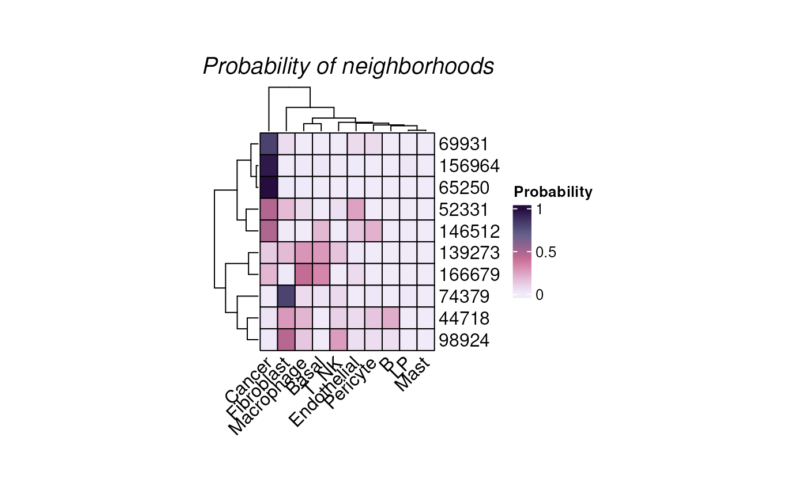
Or to check the cells-of-interest with the parameter
targetCells.
plotHoodMat(hoods, targetCells = c("900", "100000"), hm_height = 1)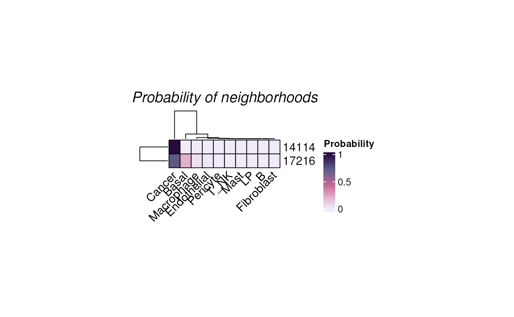
We can then attach neighborhood probabilities back to
spe and compute summary metrics.
We can use calcMetrics to calculate entropy and
perplexity of the probability matrix so that we can have a summarisation
of the neighborhood distribution across the tissue slide, i.e. where
neighborhood is more distinct and where is more mixed.
While both entropy and perplexity measure the mixture of neighborhood of each cell, perplexity can be more intuitive for the human mind as the value of it actually mean something. For example, perplexity of 1 means the cell is located in a very distinct neighborhood, perplexity of 2 means the cell is located in a mixed neighborhood, and the probability is about 50% to 50%.
spe <- mergeHoodSpe(spe, hoods)
spe <- calcMetrics(spe, pm_cols = colnames(hoods)) # entropy & perplexityMap entropy/perplexity across the tissue:
plotTissue(spe, color = entropy, size = 0.1) +
scale_color_gradient(low = "darkslateblue", high = "gold")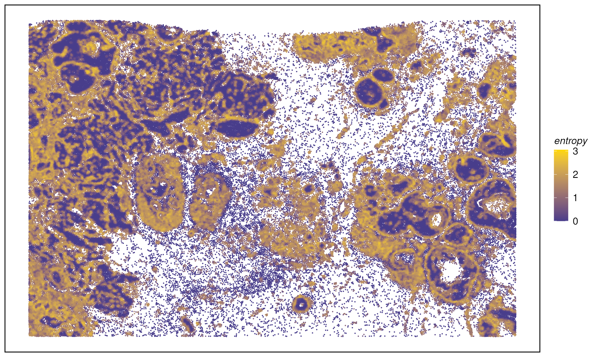
plotTissue(spe, color = perplexity, size = 0.1) +
scale_color_gradient(low = "darkslategray", high = "gold")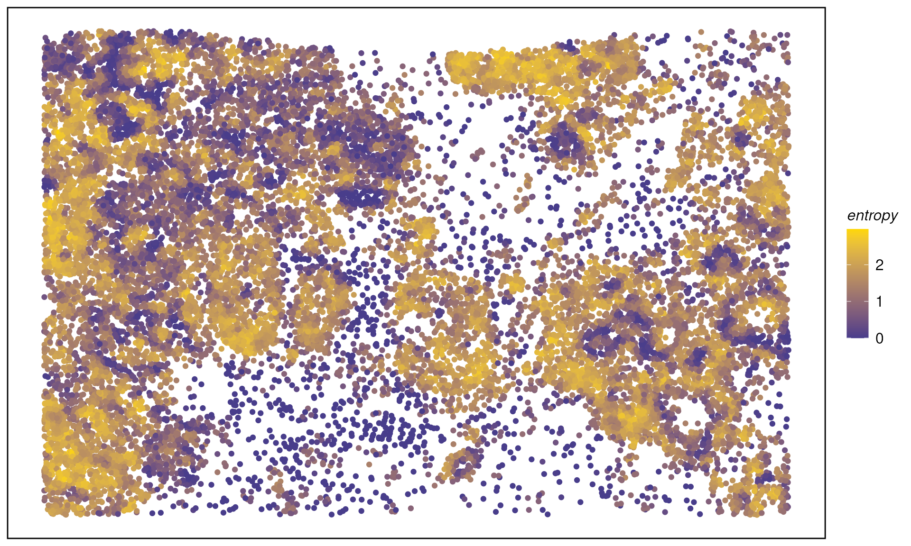
We can perform neighborhood colocalisation analysis using
plotColocal. This function compute pearson correlation on
the probability distribution of each cell. Here we can see in the test
data, immune cells are more likely to co-localise, luminal progeniotr
(LP) cells and Basal cells are more likely to colocalise. Cancer cells
have overall negative correlation to other immune cells, indicating no
immune infiltration on this sample.
hood_colocal_p <- plotColocal(spe, pm_cols = colnames(hoods))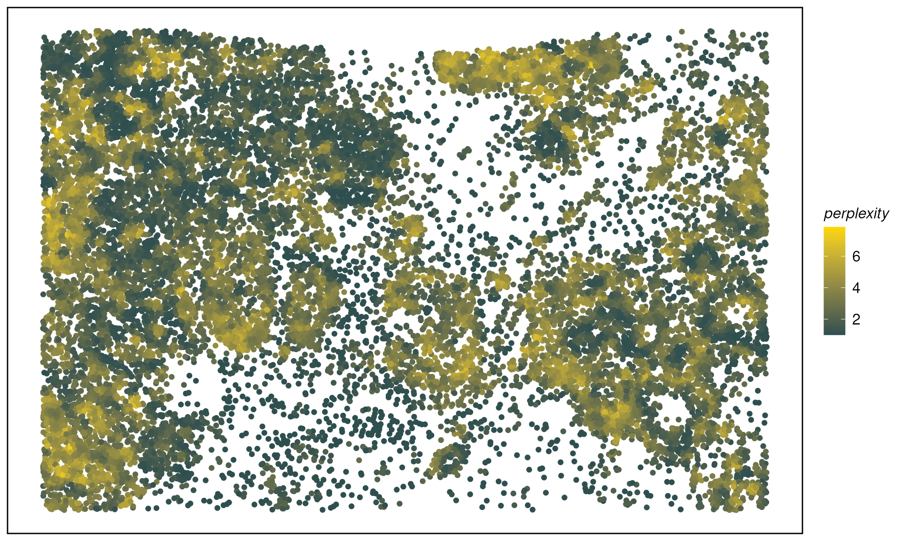
We can cluster the cells by their neighborhood probability
distribution using clustByHood.
set.seed(88)
spe <- clustByHood(spe, pm_cols = colnames(hoods), k = 9)We can see what are the neighborhood distributions look like in each
cluster using plotProbDist.
plotProbDist(
spe, pm_cols = colnames(hoods), by_cluster = TRUE, plot_all = TRUE,
fill = hoods, show_clusters = as.character(seq(9)), outlier.size = 0.1
) +
scale_fill_manual(values = ws_colors) +
theme(legend.position = "none")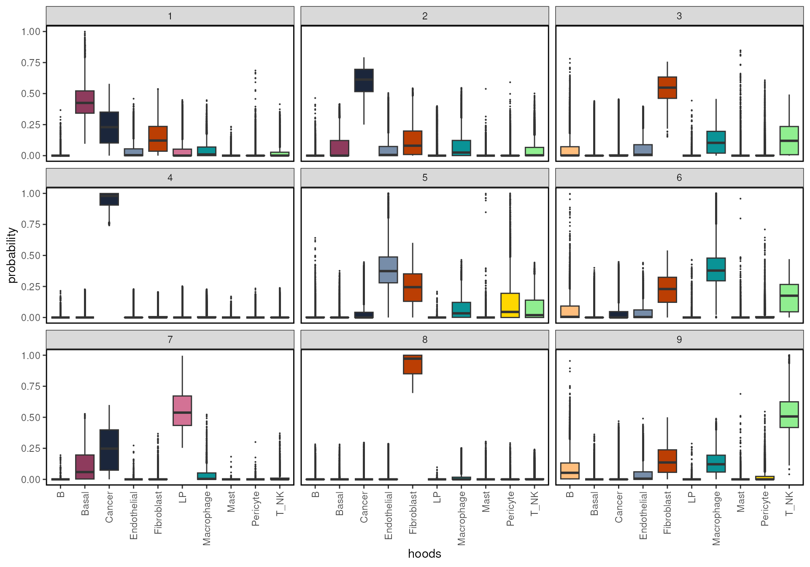
We can plot the clusters on the tissue slide, agian using
plotTissue.
plotTissue(spe, color = clusters, size = 0.1) +
scale_color_manual(values = ws_colors[10:20]) +
guides(color = guide_legend(override.aes = list(shape = 15, size = 5)))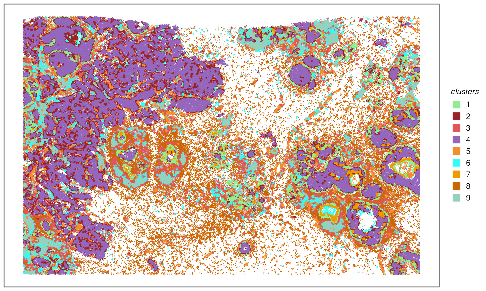
We can then mannual annotated the cluster by the distribution of cell type neighborhoods.
clust_anno <- data.frame(
clusters = as.character(seq(9)),
cluster_annotation = c(
"NearCancer","Cancer","ImmuneTME",
"Cancer","ImmuneInfiltration","ImmuneInfiltration",
"Cancer","TME","ImmuneTME"
)
)
spe$cluster_annotation <- as.data.frame(colData(spe)) %>%
#dplyr::select(-cluster_annotation) %>%
dplyr::left_join(clust_anno, by = "clusters") %>%
dplyr::pull(cluster_annotation)
plotTissue(spe, color = cluster_annotation, size = 0.1, reverseY = FALSE) +
scale_color_manual(values = ws_colors[3:10]) +
guides(color = guide_legend(override.aes = list(shape = 15, size = 5)))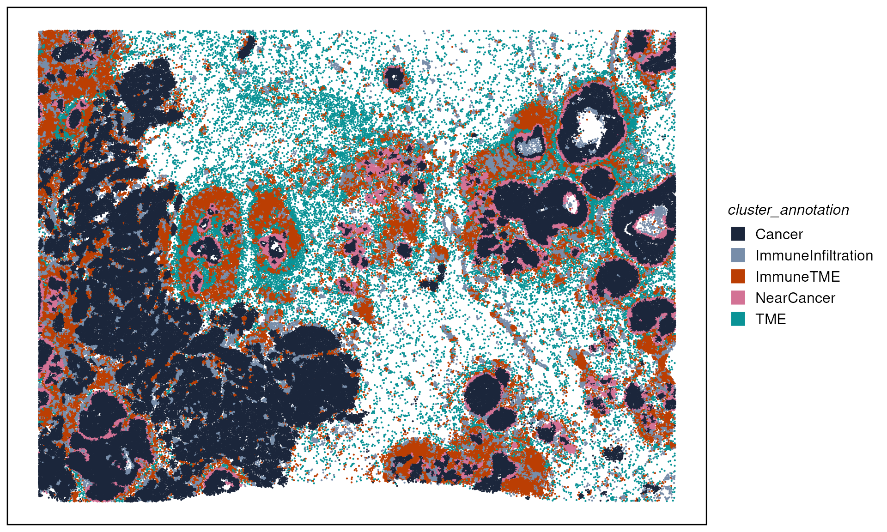
As an illustration, we want to look at if spatial neighborhoods play a role in cancer cells from “Near Cancer” and “ImmuneInfiltration” neighborhoods.
We can first subset cells that are “Cancer” cell types and located in “NearCancer” and “ImmnueInfiltration” neighborhoods.
spe_c_nc <- spe[, spe$cluster_annotation == "NearCancer" & spe$cell_annotation == "Cancer"]
spe_c_nc$group <- "Cancer_NearCancerHoods"
spe_c_ii <- spe[, spe$cluster_annotation == "ImmuneInfiltration" & spe$cell_annotation == "Cancer"]
spe_c_ii$group <- "Cancer_ImmuneInfiltrationHoods"
spe_subset <- cbind(spe_c_nc, spe_c_ii)
plotTissue(spe_subset, size = 0.1, color = group, reverseY = FALSE) +
scale_color_manual(values = c("tomato", "royalblue")) +
guides(color = guide_legend(override.aes = list(shape = 15, size = 5)))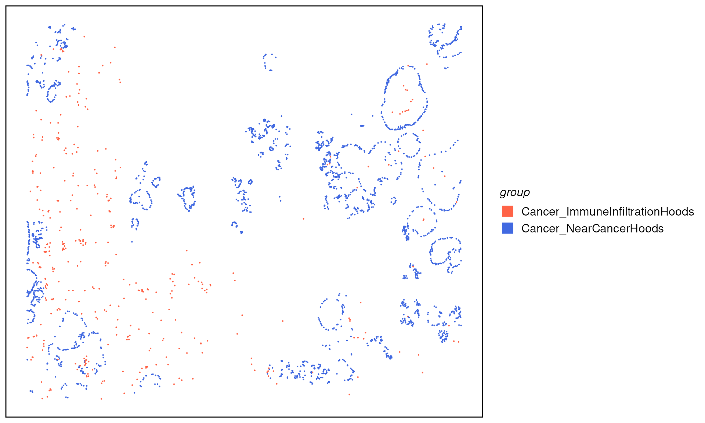
We can then perform differential expression (DE) analysis comparing cancer cells from different neighborhoods. DE can be performed in single-cell style, i.e. using tools likeSeurat or
Scran. Here we demonstrate a quick one using the
FindMarkers function from Seurat.
When data available (data with replicates), we strongly recommend
using pseudo-bulk strategy with DE pipeline such as edgeR
or limma-voom to give a more robust statistical
inference.
library(Seurat)
seu <- CreateSeuratObject(
counts = assay(spe_subset, "counts"),
meta.data = as.data.frame(colData(spe_subset))
) %>% NormalizeData() %>% ScaleData()
Idents(seu) <- "group"
c.de <- FindMarkers(seu, ident.1 = "Cancer_NearCancerHoods",
ident.2 = "Cancer_ImmuneInfiltrationHoods",
verbose = FALSE)
de_df <- c.de %>%
dplyr::mutate(score = avg_log2FC * -log10(p_val_adj + 8.00000e-324) * (pct.1 - pct.2)) %>%
dplyr::arrange(dplyr::desc(score))
Seurat::DoHeatmap(seu, features = rownames(head(de_df, n = 30)), label = FALSE)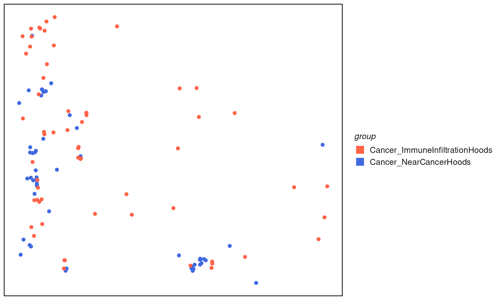
Try it yourself: Re‑run the analysis with
k = 30andk = 80when runningfindNearCells. How do entropy/perplexity or neighborhoods change?
knitr::opts_chunk$set(echo = TRUE, message = FALSE, warning = FALSE, dpi = 200)
suppressWarnings(library(tidyverse))
suppressMessages(library(scider))
suppressMessages(library(SpatialExperiment))scider models global cell‑type density
within a tissue section using the SpatialExperiment class,
and supports co‑localisation, ROI detection, and differential density
analyses.
if (!require("BiocManager", quietly = TRUE)) install.packages("BiocManager")
BiocManager::install("scider")
# Development version
# devtools::install_github("ChenLaboratory/scider")scider is a R package providing functions to model the global density of cells in a slide of spatial transcriptomics data. Same as hoodscanR, all functions in the package are built based on the SpatialExperiment object, allowing integration into various ST-related packages from Bioconductor. After modelling density, the package allows for serveral downstream analysis, including colocalization analysis, boundary detection analysis and differential density analysis.
Again, we will use the same Xenium Breast Cancer dataset.
spe <- readRDS("../inst/extdata/spe_S1_Rep1.RDS")Similarly, in scider, we can use the function
plotSpatial to visualise the cell position and color the
cells by cell types.
plotSpatial(spe, group.by = "cell_type", pt.alpha = 0.8)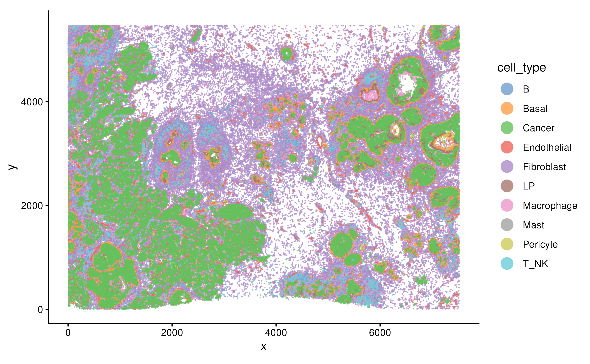
We can perform density calculation for each cell type using function
gridDensity. The calculated density and grid information
are saved in the metadata of the SpatialExperimnet object.
spe <- gridDensity(spe, id = "cell_type")
names(metadata(spe))## [1] "grid_density" "grid_info"
metadata(spe)$grid_density## DataFrame with 4864 rows and 16 columns
## x_grid y_grid node_x node_y node density_b
## <numeric> <numeric> <numeric> <numeric> <character> <numeric>
## 1 2.13252 3.64226 1 1 1-1 0.000185126
## 2 102.13252 3.64226 2 1 2-1 0.006739464
## 3 202.13252 3.64226 3 1 3-1 0.109768327
## 4 302.13252 3.64226 4 1 4-1 0.644747562
## 5 402.13252 3.64226 5 1 5-1 1.319331117
## ... ... ... ... ... ... ...
## 4860 7152.13 5459.6 72 64 72-64 0.1709555
## 4861 7252.13 5459.6 73 64 73-64 0.3407370
## 4862 7352.13 5459.6 74 64 74-64 0.3282471
## 4863 7452.13 5459.6 75 64 75-64 0.1971980
## 4864 7552.13 5459.6 76 64 76-64 0.0758587
## density_basal density_cancer density_endothelial density_fibroblast
## <numeric> <numeric> <numeric> <numeric>
## 1 0.653039 8.08791 1.06945 1.15859
## 2 0.642318 12.02509 1.21094 1.64778
## 3 0.380197 20.69236 1.11249 2.08086
## 4 0.126370 25.79031 1.37954 2.91032
## 5 0.356585 18.28568 1.75609 5.09484
## ... ... ... ... ...
## 4860 7.16655 26.07912 0.920266 4.57985
## 4861 5.92327 12.58503 1.235386 6.40674
## 4862 3.95138 5.46712 1.311451 6.35234
## 4863 4.21118 7.59530 1.113430 5.09582
## 4864 4.54376 9.88099 0.830423 3.20955
## density_lp density_macrophage density_mast density_pericyte density_t_nk
## <numeric> <numeric> <numeric> <numeric> <numeric>
## 1 0.03771750 0.764217 8.28899e-06 0.325916 0.0526858
## 2 0.04556502 1.236752 1.13504e-05 0.441117 0.2251303
## 3 0.02412946 2.364783 1.59737e-04 0.457129 0.7139376
## 4 0.00620766 3.242121 1.59131e-03 0.332122 1.5342735
## 5 0.02878974 2.727866 5.86964e-03 0.202607 2.3672877
## ... ... ... ... ... ...
## 4860 4.087987 0.837792 0.028396408 0.37175527 0.8905695
## 4861 2.376304 0.873325 0.042272851 0.41815150 0.8516191
## 4862 0.933148 0.490780 0.024095772 0.18571650 0.4158388
## 4863 0.772963 0.270787 0.004806929 0.03184891 0.1239474
## 4864 0.580467 0.164666 0.000419773 0.00254799 0.0289314
## density_overall
## <numeric>
## 1 12.1497
## 2 17.4814
## 3 27.9358
## 4 35.9676
## 5 32.1449
## ... ...
## 4860 45.1332
## 4861 31.0528
## 4862 19.4601
## 4863 19.4173
## 4864 19.3176We can visualise the overall cell density of the whole tissue using
function plotDensity.
plotDensity(spe)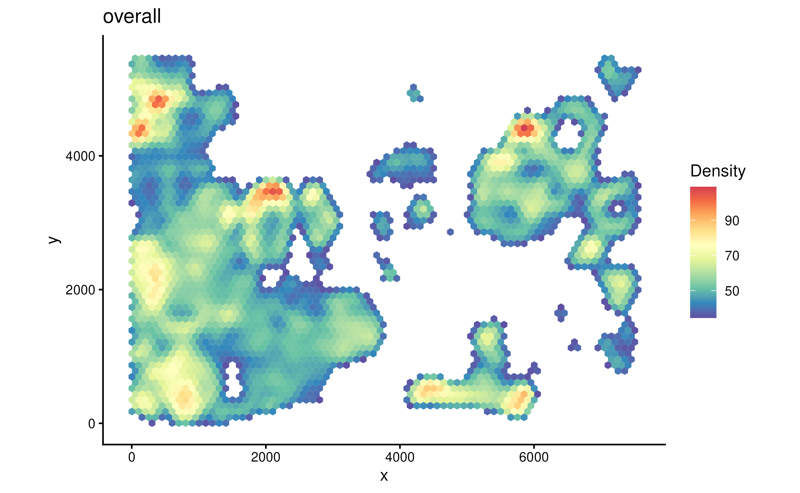
The parameter probs control the filtering when plotting.
Since we didn’t specify cell type of interest in coi
parameter when running gridDensity. It will compute cell
density of all cell types. In a tumor sample, usually cancer region
would have higher cell density.
plotDensity(spe, probs = 0)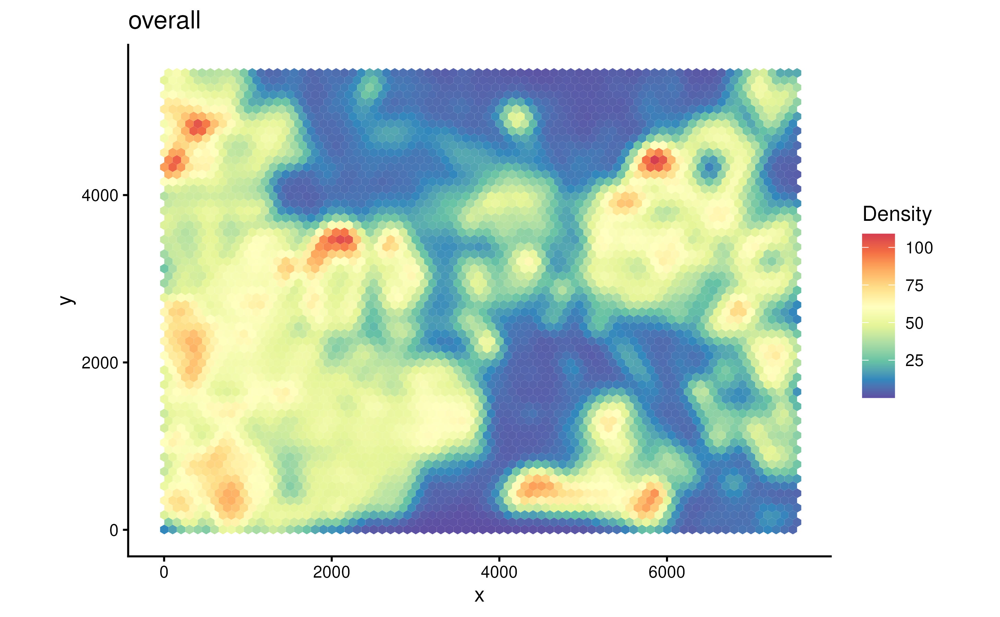
We can also visualise the density of individual cell type, e.g., fibroblast cells or cancer cells.
plotDensity(spe, coi = "Fibroblast") + plotDensity(spe, coi = "Cancer")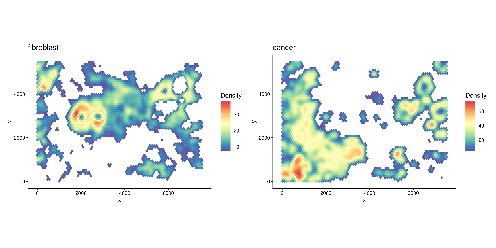
After obtaining grid-based density for each COI, we can then detect regions-of-interest (ROIs) based on density or select by user.
To detect ROIs automatically, we can use the function
findROI.
The detected ROIs are saved in the metadata of the SpatialExperiment object.
Here we identify ROIs based on the cancer cell density.
spe <- findROI(spe, coi = "Cancer")
metadata(spe)$cancer_roi## DataFrame with 606 rows and 6 columns
## component members x y xcoord ycoord
## <factor> <character> <character> <character> <numeric> <numeric>
## 1 1 29-9 29 9 2802.13 696.463
## 2 1 30-9 30 9 2902.13 696.463
## 3 1 27-10 27 10 2652.13 783.065
## 4 1 28-10 28 10 2752.13 783.065
## 5 1 29-10 29 10 2852.13 783.065
## ... ... ... ... ... ... ...
## 602 9 8-14 8 14 752.133 1129.48
## 603 9 9-14 9 14 852.133 1129.48
## 604 9 10-14 10 14 952.133 1129.48
## 605 9 8-15 8 15 702.133 1216.08
## 606 9 9-15 9 15 802.133 1216.08We can visualise the ROIs with function plotROI.
plotROI(spe, roi = "Cancer")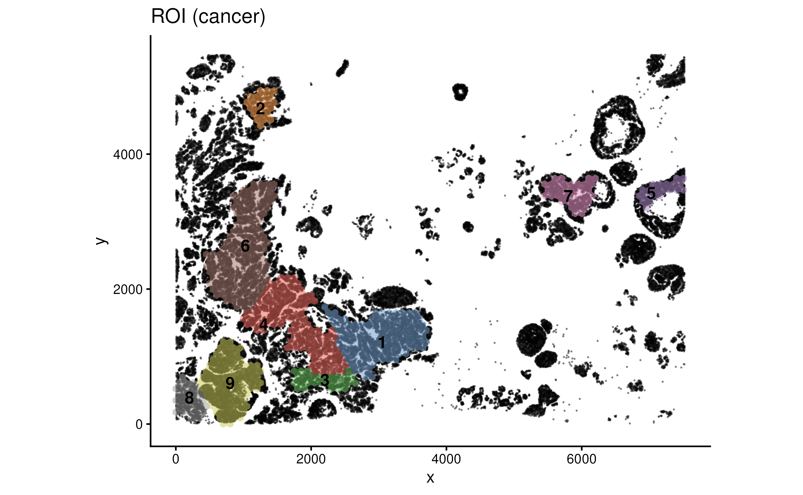
Many parameters can be tuned in findROI(). The
method control what algorithm to be used when defining ROIs
(Greedy, Walktrap, Connected, HDbscan etc). The probs
control the proportion of cells (based on density) that go into the
identification of ROIs.
spe1 <- findROI(spe, coi = "Cancer", probs = 0.6)
spe2 <- findROI(spe, coi = "Cancer", probs = 0.6, method = "connected")
spe3 <- findROI(spe, coi = "Cancer", probs = 0.6, method = "walktrap")
spe4 <- findROI(spe, coi = "Cancer", probs = 0.6, method = "hdbscan")
(plotROI(spe1, roi = "Cancer") + ggtitle("Greedy")) +
(plotROI(spe2, roi = "Cancer") + ggtitle("Connected")) +
(plotROI(spe3, roi = "Cancer") + ggtitle("Walktrap")) +
(plotROI(spe4, roi = "Cancer") + ggtitle("HDbscan"))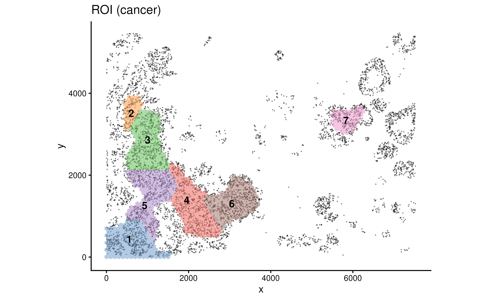
spe <- findROI(spe, coi = "Cancer", probs = 0.6)After defining ROIs, we can then test the relationship between any
two cell types within each ROI or overall but account for ROI variation
using a cubic spline or a linear fit. This can be done with function
corrDensity.
cor.res <- corDensity(spe, roi = "Cancer")We can see the correlation between each pair of cell types in each ROI.
cor.res$ROI## DataFrame with 720 rows and 9 columns
## celltype1 celltype2 ROI ngrid cor.coef t
## <character> <character> <character> <numeric> <numeric> <numeric>
## 1 B Basal 1 257 0.613703 4.583012
## 2 B Basal 2 36 -0.624783 -2.577679
## 3 B Basal 3 76 -0.183509 -0.595102
## 4 B Basal 4 248 0.448324 3.393524
## 5 B Basal 5 256 0.341926 3.920226
## ... ... ... ... ... ... ...
## 716 Pericyte T nk 12 135 0.1000424 0.708760
## 717 Pericyte T nk 13 119 -0.1559238 -0.700237
## 718 Pericyte T nk 14 34 0.9206055 6.326670
## 719 Pericyte T nk 15 105 0.5931799 4.279033
## 720 Pericyte T nk 16 50 0.0660313 0.264615
## df p.Pos p.Neg
## <numeric> <numeric> <numeric>
## 1 34.7640 2.84252e-05 0.999972
## 2 10.3771 9.86605e-01 0.013395
## 3 10.1622 7.17604e-01 0.282396
## 4 45.7792 7.16520e-04 0.999283
## 5 116.0812 7.50403e-05 0.999925
## ... ... ... ...
## 716 49.68923 0.240892753 0.759107
## 717 19.67777 0.754011906 0.245988
## 718 7.20164 0.000175331 0.999825
## 719 33.72761 0.000073172 0.999927
## 720 15.98938 0.397343416 0.602657Or the correlation between each pair of cell types across the whole slide:
cor.res$overall## DataFrame with 45 rows and 5 columns
## celltype1 celltype2 cor.coef p.Pos p.Neg
## <character> <character> <numeric> <numeric> <numeric>
## 1 B Basal 0.126945 1.01588e-07 8.82617e-01
## 2 B Cancer -0.416750 1.00000e+00 2.54999e-18
## 3 B Endothelial 0.427315 2.46201e-16 1.00000e+00
## 4 B Fibroblast 0.585464 3.56212e-33 1.00000e+00
## 5 B Lp -0.025167 1.06853e-02 2.52989e-01
## ... ... ... ... ... ...
## 41 Macrophage Pericyte 0.427478 1.51610e-11 0.999995
## 42 Macrophage T nk 0.788646 2.38150e-57 1.000000
## 43 Mast Pericyte 0.215193 3.54508e-04 0.998188
## 44 Mast T nk 0.324211 1.70144e-07 0.999852
## 45 Pericyte T nk 0.444070 4.66862e-15 0.999985We can then visualise the statistics between each pair of cell types
using function plotCorHeatmap in the ROIs
plotCorHeatmap(cor.res$ROI)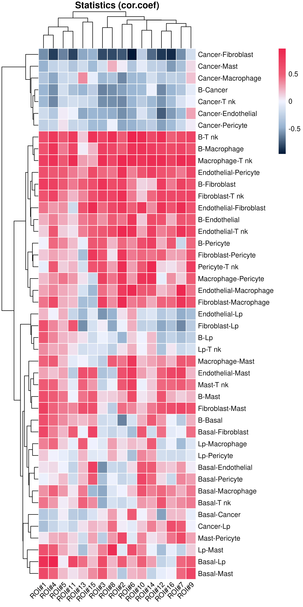
Or the correlation between cell type pairs across the whole slide:
plotCorHeatmap(cor.res$overall)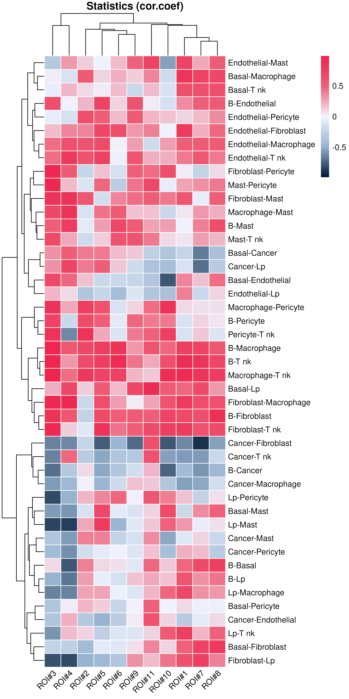
We can look back at the co-localisation done by hoodscanR, since we were using cell types as the annotation to calculate the neighborhood probability matrix, we can see that at whole slide level, both methods generate very similar results.
hood_colocal_p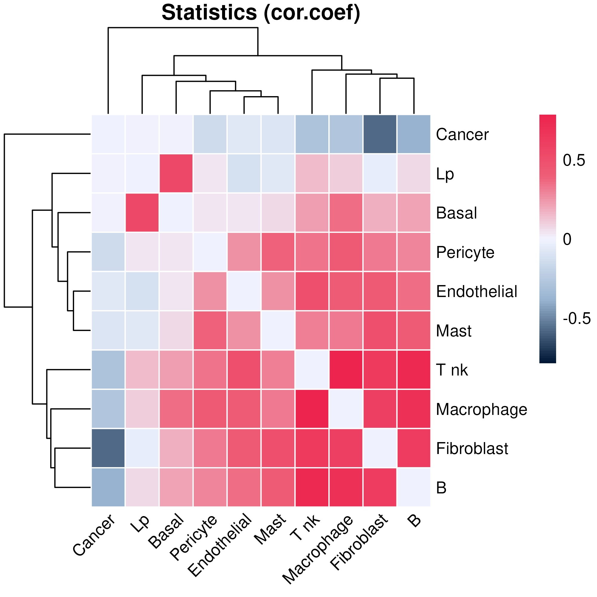
But in scider, we can focus on ROIs, we can also visualise a fitted pairwise relationship and its heterogeneity across ROIs.
We can see that in different cancer ROIs, the co-localisation status between basal cells and luminal progenitor are different. For example, they are positively correlated in ROI1 and ROI4, but negatively correlated in ROI12 and ROI16.
Spatial pattern might be vary depends on tissue context, using scider can offer a more precise approach by examining it in different ROI.
plotDensCor(spe, celltype1 = "Basal", celltype2 = "LP", roi = "Cancer") + plotROI(spe, roi = "Cancer")Based on the grid density, we can ask many biological question about the data. For example, we would like to know if a certain cell type that are located in high density of cancer cells are different to the same cell type from a different level of cancer region.
To address this question, we first need to divide cells into
different levels of grid density. This can be done using a contour
identification strategy with function getContour.
spe <- getContour(spe, coi = "Cancer")Different level of contour can be visualised with cells using
plotContour.
plotContour(spe, coi = "Cancer")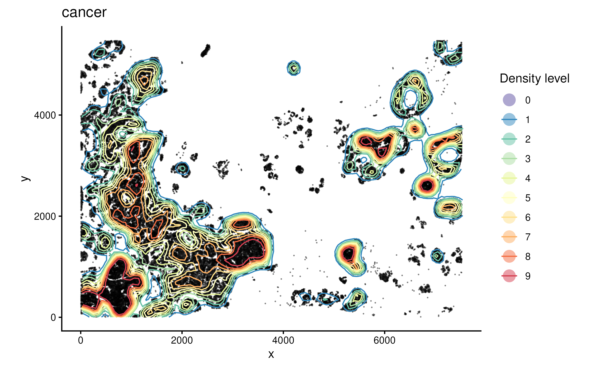
We can then annotate cells by their locations within each contour
using function allocateCells.
spe <- allocateCells(spe)We can visualise the continous regions on the tissue based on cancer density.
plotSpatial(spe, group.by = "cancer_contour", pt.alpha = 0.5)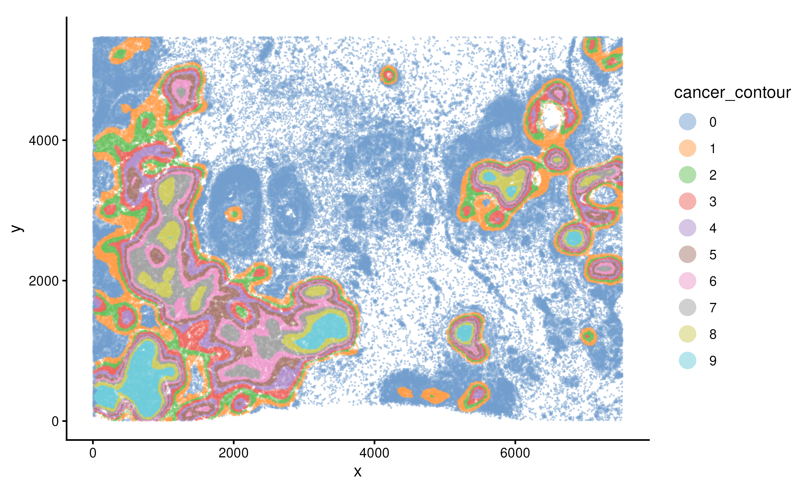
Compare composition per level:
plotCellCompo(spe, contour = "Cancer")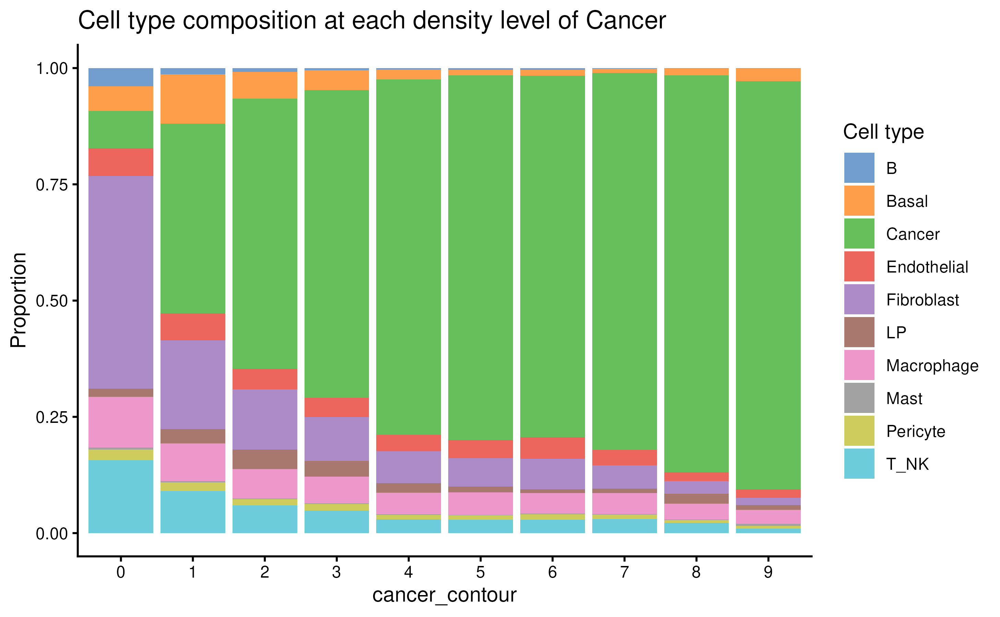
plotCellCompo(spe, contour = "Cancer", self.included = FALSE)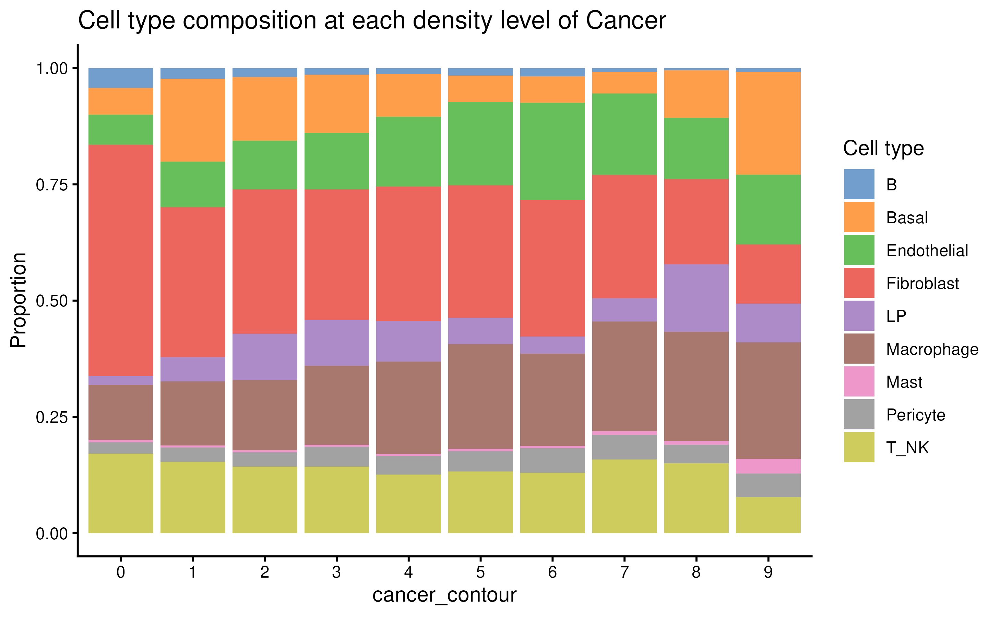
To investigate if cell types from different cancer contour regions
have different transcriptomics profiles, one way to do this is by using
the spe2PB function to pseudobulk the data by contour and
cell types.
y <- spe2PB(spe, contour = "Cancer")
y## An object of class "DGEList"
## $counts
## B_Lv0 B_Lv1 B_Lv2 B_Lv3 B_Lv4 B_Lv5 B_Lv6 B_Lv7 B_Lv8 B_Lv9 Basal_Lv0
## ABCC11 146 16 9 8 3 4 1 3 2 2 679
## ACTA2 1185 140 70 21 31 9 17 11 4 0 24936
## ACTG2 2527 121 59 29 16 24 12 4 6 3 17699
## ADAM9 550 55 23 12 5 5 12 1 1 1 3736
## ADGRE5 1254 124 32 26 10 11 8 4 4 0 651
## Basal_Lv1 Basal_Lv2 Basal_Lv3 Basal_Lv4 Basal_Lv5 Basal_Lv6 Basal_Lv7
## ABCC11 701 189 136 71 35 53 17
## ACTA2 11649 4069 2610 1146 680 571 371
## ACTG2 8585 3125 1791 813 498 371 189
## ADAM9 1394 516 354 138 77 80 52
## ADGRE5 304 100 48 31 9 12 6
## Basal_Lv8 Basal_Lv9 Cancer_Lv0 Cancer_Lv1 Cancer_Lv2 Cancer_Lv3
## ABCC11 25 37 8503 13697 15743 17499
## ACTA2 409 814 9957 9513 7716 6933
## ACTG2 214 427 13822 13834 13069 12364
## ADAM9 76 145 10750 10032 10521 11287
## ADGRE5 9 12 449 376 310 305
## Cancer_Lv4 Cancer_Lv5 Cancer_Lv6 Cancer_Lv7 Cancer_Lv8 Cancer_Lv9
## ABCC11 17501 17709 16259 20672 14200 10924
## ACTA2 6338 6684 5726 6862 4390 4034
## ACTG2 11381 11303 10637 12781 9170 9550
## ADAM9 11035 10965 10072 12492 9105 10739
## ADGRE5 239 231 191 211 154 133
## Endothelial_Lv0 Endothelial_Lv1 Endothelial_Lv2 Endothelial_Lv3
## ABCC11 391 151 120 132
## ACTA2 14483 3059 1706 1559
## ACTG2 5840 1177 648 532
## ADAM9 3544 829 552 430
## ADGRE5 1621 342 226 203
## Endothelial_Lv4 Endothelial_Lv5 Endothelial_Lv6 Endothelial_Lv7
## ABCC11 75 125 109 83
## ACTA2 1164 1117 1181 973
## ACTG2 429 404 495 413
## ADAM9 310 388 424 309
## ADGRE5 145 127 139 133
## Endothelial_Lv8 Endothelial_Lv9 Fibroblast_Lv0 Fibroblast_Lv1
## ABCC11 33 36 7123 872
## ACTA2 362 358 90994 11074
## ACTG2 152 142 56910 4158
## ADAM9 109 139 37648 2976
## ADGRE5 48 58 16418 1119
## Fibroblast_Lv2 Fibroblast_Lv3 Fibroblast_Lv4 Fibroblast_Lv5
## ABCC11 528 385 320 272
## ACTA2 5744 4128 2860 2661
## ACTG2 1866 1310 824 656
## ADAM9 1555 1249 732 696
## ADGRE5 484 320 197 170
## Fibroblast_Lv6 Fibroblast_Lv7 Fibroblast_Lv8 Fibroblast_Lv9 LP_Lv0
## ABCC11 263 154 74 28 139
## ACTA2 2353 2014 845 465 942
## ACTG2 679 506 177 124 1467
## ADAM9 631 547 218 119 1793
## ADGRE5 151 121 33 23 268
## LP_Lv1 LP_Lv2 LP_Lv3 LP_Lv4 LP_Lv5 LP_Lv6 LP_Lv7 LP_Lv8 LP_Lv9
## ABCC11 313 279 244 119 54 35 57 43 10
## ACTA2 428 316 242 111 60 27 65 71 11
## ACTG2 1035 1045 750 383 203 90 214 200 35
## ADAM9 1115 1384 1163 679 387 210 239 520 47
## ADGRE5 91 109 84 42 30 17 12 26 3
## Macrophage_Lv0 Macrophage_Lv1 Macrophage_Lv2 Macrophage_Lv3
## ABCC11 733 219 182 155
## ACTA2 6696 1479 692 611
## ACTG2 12032 1694 1000 881
## ADAM9 5646 1160 785 733
## ADGRE5 3915 503 265 193
## Macrophage_Lv4 Macrophage_Lv5 Macrophage_Lv6 Macrophage_Lv7
## ABCC11 123 161 97 116
## ACTA2 454 466 346 398
## ACTG2 611 613 500 501
## ADAM9 563 560 406 478
## ADGRE5 124 126 83 100
## Macrophage_Lv8 Macrophage_Lv9 Mast_Lv0 Mast_Lv1 Mast_Lv2 Mast_Lv3
## ABCC11 54 23 42 9 0 3
## ACTA2 135 138 396 37 35 22
## ACTG2 292 320 416 29 23 13
## ADAM9 372 294 167 12 13 11
## ADGRE5 57 52 147 15 6 5
## Mast_Lv4 Mast_Lv5 Mast_Lv6 Mast_Lv7 Mast_Lv8 Mast_Lv9 Pericyte_Lv0
## ABCC11 2 2 1 4 5 2 127
## ACTA2 14 14 4 8 13 8 18071
## ACTG2 3 11 8 8 3 10 5078
## ADAM9 5 5 5 6 4 12 1475
## ADGRE5 4 1 2 5 0 5 1236
## Pericyte_Lv1 Pericyte_Lv2 Pericyte_Lv3 Pericyte_Lv4 Pericyte_Lv5
## ABCC11 55 22 25 13 19
## ACTA2 2734 1287 1409 627 684
## ACTG2 604 325 391 113 114
## ADAM9 281 175 163 76 71
## ADGRE5 179 74 94 33 36
## Pericyte_Lv6 Pericyte_Lv7 Pericyte_Lv8 Pericyte_Lv9 T_NK_Lv0 T_NK_Lv1
## ABCC11 33 22 8 8 532 186
## ACTA2 676 615 257 183 7348 1275
## ACTG2 158 128 47 56 10370 1152
## ADAM9 113 118 30 32 2001 325
## ADGRE5 42 41 22 12 7213 921
## T_NK_Lv2 T_NK_Lv3 T_NK_Lv4 T_NK_Lv5 T_NK_Lv6 T_NK_Lv7 T_NK_Lv8 T_NK_Lv9
## ABCC11 119 103 63 77 53 79 40 19
## ACTA2 576 469 218 211 247 250 115 45
## ACTG2 568 482 227 257 193 200 120 55
## ADAM9 229 201 117 79 101 121 79 28
## ADGRE5 415 321 155 127 121 145 79 25
## 308 more rows ...
##
## $samples
## group lib.size norm.factors n.cells cell_type contour.level
## B_Lv0 1 301585 1 3079 B 0
## B_Lv1 1 23837 1 219 B 1
## B_Lv2 1 10704 1 89 B 2
## B_Lv3 1 5856 1 51 B 3
## B_Lv4 1 3072 1 25 B 4
## 95 more rows ...
##
## $genes
## genes
## ABCC11 ABCC11
## ACTA2 ACTA2
## ACTG2 ACTG2
## ADAM9 ADAM9
## ADGRE5 ADGRE5
## 308 more rows ...
dim(y)## [1] 313 100Now that the object become a DGEList object, we can then use package
such as edgeR to examine the data.
We can see that in PCA space, the pseudobulk data are clustered by cell type, and within cell type, we can observe a trend of variance by contour level.
y <- edgeR::calcNormFactors(y)
pca.res <- prcomp(t(edgeR::cpm(y, log = TRUE)), rank. = 10)$x
cbind(y$samples, pca.res) %>%
ggplot(aes(PC1, PC2, color = cell_type)) +
geom_point(size = 5) +
scale_color_manual(values = ws_colors) +
ggrepel::geom_text_repel(aes(label = contour.level)) +
theme_classic()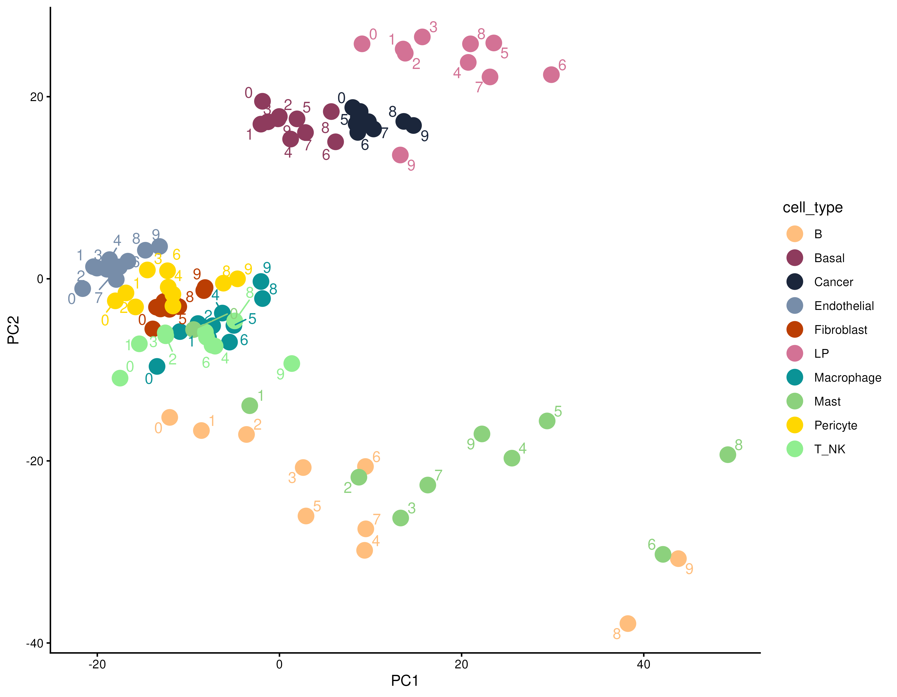
Many tools aimming to analyse ST data have built in Python,
especially tools that built based on deep-learning algorithms. In
python, most ST data are handled using the AnnData
infrastructure. Therefore, it’s important to learn how to transfer
SpatialExperiment object data into an AnnData object in
Python. Which can then be used for many Python-based methods.
In AnnData object, the spatial coordinates is usually
store in the obsm slot, which is used to store all the
dimension reduction results. So we need to first transfer the cell
coordinates to the reducedDims slot of the object.
Then we can output a .h5ad file from the
SpatialExperiment object, which can then read by
scanpy.read_h5ad via the scanpy library in
Python.
spe <- readRDS("../inst/extdata/spe_S1_Rep1.RDS")
reducedDims(spe) <- list(spatial = spatialCoords(spe))
zellkonverter::writeH5AD(spe, file = "../inst/extdata/spe.h5ad", compression = "gzip")The downstream analysis of the spatial transcriptomics data depends
on the biological questions being asked, hoodscanR and
scider are designed to look at spatial transcriptomics data
in different perspectives, therefore offering .
This workflow depends on various packages from version 3.23 of the Bioconductor project, running on R Under development (unstable) (2025-11-22 r89050) or higher. The complete list of the packages used for this workflow are shown below:
## R Under development (unstable) (2025-11-22 r89050)
## Platform: x86_64-pc-linux-gnu
## Running under: Ubuntu 24.04.3 LTS
##
## Matrix products: default
## BLAS: /usr/lib/x86_64-linux-gnu/openblas-pthread/libblas.so.3
## LAPACK: /usr/lib/x86_64-linux-gnu/openblas-pthread/libopenblasp-r0.3.26.so; LAPACK version 3.12.0
##
## locale:
## [1] LC_CTYPE=en_US.UTF-8 LC_NUMERIC=C
## [3] LC_TIME=en_US.UTF-8 LC_COLLATE=en_US.UTF-8
## [5] LC_MONETARY=en_US.UTF-8 LC_MESSAGES=en_US.UTF-8
## [7] LC_PAPER=en_US.UTF-8 LC_NAME=C
## [9] LC_ADDRESS=C LC_TELEPHONE=C
## [11] LC_MEASUREMENT=en_US.UTF-8 LC_IDENTIFICATION=C
##
## time zone: Etc/UTC
## tzcode source: system (glibc)
##
## attached base packages:
## [1] stats4 stats graphics grDevices utils datasets methods
## [8] base
##
## other attached packages:
## [1] sf_1.0-22 future_1.68.0
## [3] Seurat_5.3.1 SeuratObject_5.2.0
## [5] sp_2.2-0 SpatialExperiment_1.21.0
## [7] SingleCellExperiment_1.33.0 SummarizedExperiment_1.41.0
## [9] Biobase_2.71.0 GenomicRanges_1.63.0
## [11] Seqinfo_1.1.0 IRanges_2.45.0
## [13] S4Vectors_0.49.0 BiocGenerics_0.57.0
## [15] generics_0.1.4 MatrixGenerics_1.23.0
## [17] matrixStats_1.5.0 lubridate_1.9.4
## [19] forcats_1.0.1 stringr_1.6.0
## [21] dplyr_1.1.4 purrr_1.2.0
## [23] readr_2.1.6 tidyr_1.3.1
## [25] tibble_3.3.0 ggplot2_4.0.1
## [27] tidyverse_2.0.0 scider_1.9.0
## [29] hoodscanR_1.9.0
##
## loaded via a namespace (and not attached):
## [1] RcppAnnoy_0.0.22 splines_4.6.0 later_1.4.4
## [4] filelock_1.0.3 polyclip_1.10-7 janitor_2.2.1
## [7] fastDummies_1.7.5 lifecycle_1.0.4 edgeR_4.9.0
## [10] doParallel_1.0.17 globals_0.18.0 lattice_0.22-7
## [13] MASS_7.3-65 magrittr_2.0.4 limma_3.67.0
## [16] plotly_4.11.0 sass_0.4.10 rmarkdown_2.30
## [19] jquerylib_0.1.4 yaml_2.3.10 httpuv_1.6.16
## [22] otel_0.2.0 sctransform_0.4.2 spam_2.11-1
## [25] spatstat.sparse_3.1-0 reticulate_1.44.1 DBI_1.2.3
## [28] cowplot_1.2.0 pbapply_1.7-4 RColorBrewer_1.1-3
## [31] abind_1.4-8 Rtsne_0.17 SpatialPack_0.4-1
## [34] circlize_0.4.16 ggrepel_0.9.6 irlba_2.3.5.1
## [37] listenv_0.10.0 spatstat.utils_3.2-0 pheatmap_1.0.13
## [40] BiocStyle_2.39.0 units_1.0-0 goftest_1.2-3
## [43] RSpectra_0.16-2 spatstat.random_3.4-3 fitdistrplus_1.2-4
## [46] parallelly_1.45.1 pkgdown_2.2.0 codetools_0.2-20
## [49] DelayedArray_0.37.0 prettydoc_0.4.1 tidyselect_1.2.1
## [52] shape_1.4.6.1 farver_2.1.2 spatstat.explore_3.6-0
## [55] jsonlite_2.0.0 GetoptLong_1.0.5 e1071_1.7-16
## [58] progressr_0.18.0 ggridges_0.5.7 survival_3.8-3
## [61] iterators_1.0.14 hexDensity_1.4.10 systemfonts_1.3.1
## [64] foreach_1.5.2 dbscan_1.2.3 tools_4.6.0
## [67] ragg_1.5.0 ica_1.0-3 Rcpp_1.1.0
## [70] glue_1.8.0 gridExtra_2.3 SparseArray_1.11.5
## [73] mgcv_1.9-4 xfun_0.54 withr_3.0.2
## [76] BiocManager_1.30.27 fastmap_1.2.0 basilisk_1.23.0
## [79] digest_0.6.39 timechange_0.3.0 R6_2.6.1
## [82] mime_0.13 textshaping_1.0.4 colorspace_2.1-2
## [85] scattermore_1.2 tensor_1.5.1 spatstat.data_3.1-9
## [88] hexbin_1.28.5 data.table_1.17.8 class_7.3-23
## [91] httr_1.4.7 htmlwidgets_1.6.4 S4Arrays_1.11.1
## [94] uwot_0.2.4 pkgconfig_2.0.3 scico_1.5.0
## [97] gtable_0.3.6 ComplexHeatmap_2.27.0 lmtest_0.9-40
## [100] S7_0.2.1 XVector_0.51.0 fastmatrix_0.6-4
## [103] htmltools_0.5.8.1 dotCall64_1.2 clue_0.3-66
## [106] scales_1.4.0 png_0.1-8 snakecase_0.11.1
## [109] spatstat.univar_3.1-5 knitr_1.50 tzdb_0.5.0
## [112] reshape2_1.4.5 rjson_0.2.23 nlme_3.1-168
## [115] proxy_0.4-27 cachem_1.1.0 zoo_1.8-14
## [118] GlobalOptions_0.1.2 KernSmooth_2.23-26 parallel_4.6.0
## [121] miniUI_0.1.2 zellkonverter_1.21.0 desc_1.4.3
## [124] pillar_1.11.1 grid_4.6.0 vctrs_0.6.5
## [127] RANN_2.6.2 promises_1.5.0 xtable_1.8-4
## [130] cluster_2.1.8.1 evaluate_1.0.5 magick_2.9.0
## [133] locfit_1.5-9.12 cli_3.6.5 compiler_4.6.0
## [136] rlang_1.1.6 crayon_1.5.3 future.apply_1.20.0
## [139] labeling_0.4.3 classInt_0.4-11 plyr_1.8.9
## [142] fs_1.6.6 stringi_1.8.7 viridisLite_0.4.2
## [145] deldir_2.0-4 lazyeval_0.2.2 spatstat.geom_3.6-1
## [148] Matrix_1.7-4 dir.expiry_1.19.0 RcppHNSW_0.6.0
## [151] hms_1.1.4 patchwork_1.3.2 statmod_1.5.1
## [154] shiny_1.11.1 ROCR_1.0-11 igraph_2.2.1
## [157] bslib_0.9.0 lwgeom_0.2-14